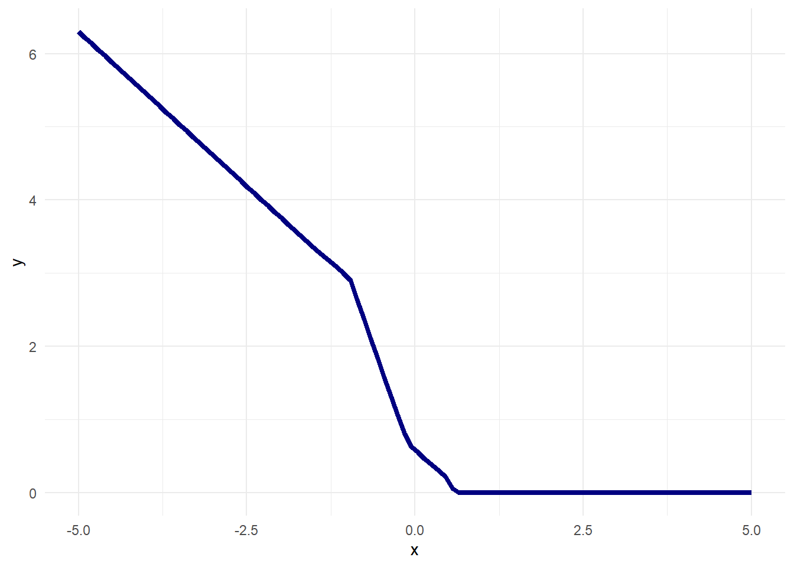
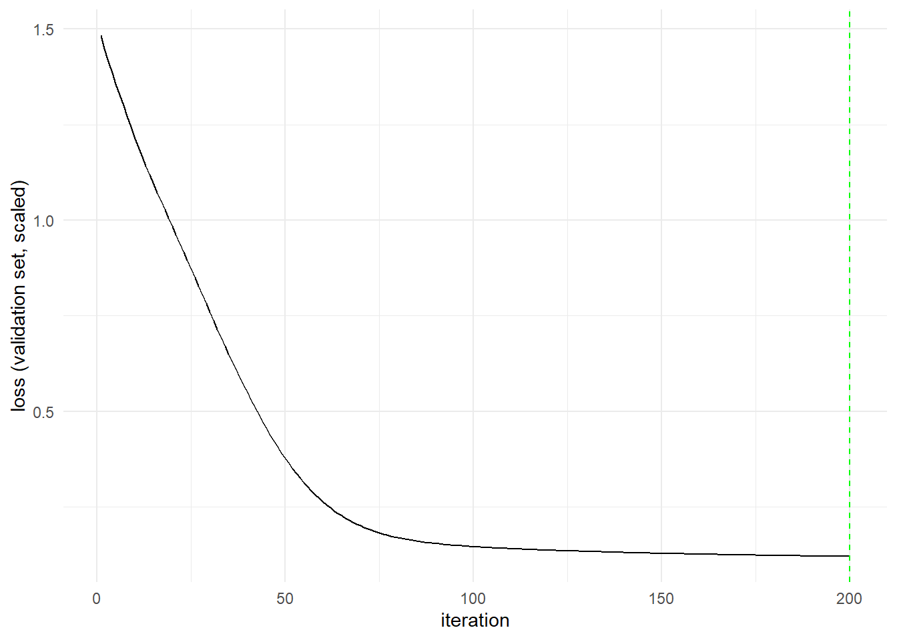
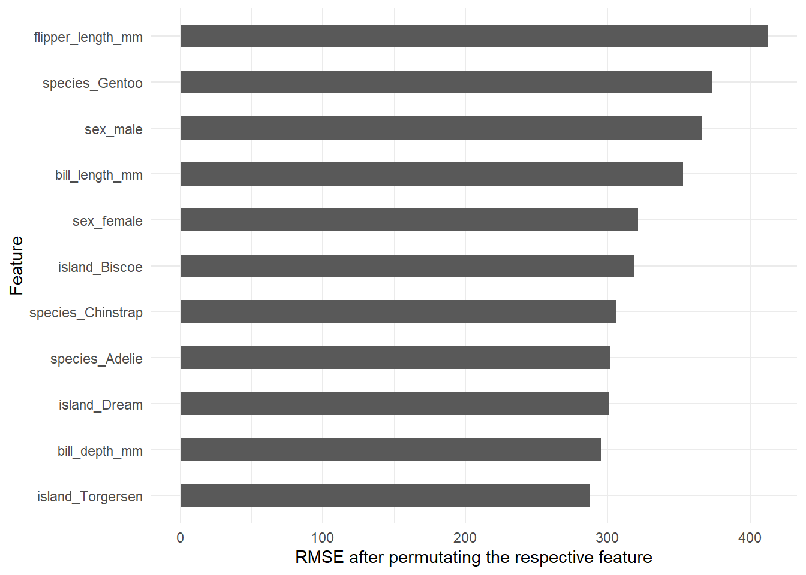
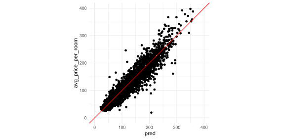
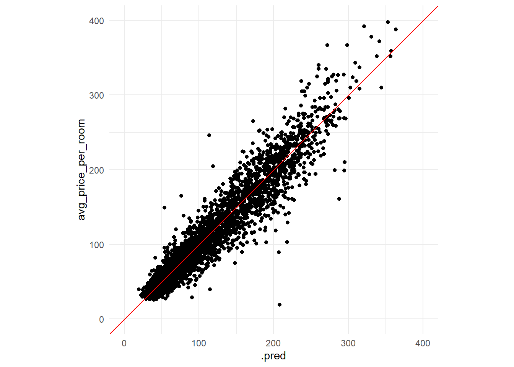

ReLU <- function(x){
max(x,0)
}
i1 <- 2
b1 <- 1
w_i1o1 <- 1.5
w_b1o1 <- 2.5
(o1 <- ReLU(w_i1o1*i1+w_b1o1*b1))[1] 5.5w_i1o1 <- -1.5
w_b1o1 <- -2.5
(o1 <- ReLU(w_i1o1*i1+w_b1o1*b1))[1] 0In dieser Übung werden wir einige theoretische und praktische Aspekte neuronaler Netze betrachten. Neuronale Netze sind inzwischen die am häufigsten verwendeten Modelle in der Forschung und Industrie des Data Minings, da sie vielseitig und leistungsfähig bei der Anwendung in Klassifizierungs- und Regressionsaufgaben sind. Das Training neuronaler Netze erfordert allerdings nicht nur eine große Datenmenge, um zufriedenstellende Ergebnisse zu erzielen, sondern kann je nach Anzahl der Merkmale und Stichproben auch viel Zeit in Anspruch nehmen.
Neuronale Netze werden häufig mit der Funktionsweise des menschlichen Gehirns verglichen, auch wenn dieser Zusammenhang selbst bei den einfachsten Konzepten an seine Grenzen stößt (vgl. Quanta Magazin: AI is nothing like a brain and that’s okay). Auch wenn neuronale Netze bereits seit den 1940er Jahren existieren, wurde deren Anwendung wie zum Beispiel in Large Language Models (ChatGPT, LeChat,…) erst in den vergangen Jahren für die breite Gesellschaft zugänglich. Damit wir moderne Architekturen wie Transformer verstehen können, auf denen zum Beispiel auch Large Language Models basieren, dürfen wir die Grundlagen, gelegt durch einfache neuronale Netze, nicht vernachlässigen.
Neuronale Netze werden in ihrer einfach Form, wie wir sie in dieser Veranstaltung behandeln, vor allem für Regressions- und Klassifikationsaufgaben verwendet. Wir befinden uns also bei diesen Anwendungsfällen im Bereich des Supervised Learnings, da wir die Zielvariable kennen.
Bei einer Regressionsaufgabe ist wie immer das Ziel eine Funktion \(f:\mathbb{R}^J\to\mathbb{R}\) zu finden, welche den bestmöglichen Zusammenhang \(y = f(x)+\varepsilon\) erklärt. Im Falle eines Neuronalen Netzes beschreiben wir die Funktion \(f\) allgemein druch Weights (Gewichten) und Biases (Konstanten) welche den Rückgabewert beeinflussen.
Im folgenden Abschnitt werden wir die grundlegende Idee eines einfachen neuronalen Netzes sequentiell erweitern, bis wir bei sogenannten Feed-Forward Deep Neural Networks (FFDNN) angekommen sind.
Feed-Forward Neuronale Netze (FFNN) bestehen aus Neuronen welche in einer festen Reihenfolge angeordnet sind und Daten vorwärts verarbeiten.
So können wir ein FFNN bestehend aus einem einzelnen Neuron grafisch wie folgt darstellen:

Hierbei steht
Die Pfeile in der obigen Grafik deuten die Richtung des Informationsflusses an. Der Input \(I_1\) wird durch den Parameter \(\omega_{I_1,O_1}\) Gewichtet. Neben dem Input wird ein konstanter Term (Bias) \(\omega_{B_1,O_1}\) dem gewichteten Input hinzugefügt. Die beiden Terme werden durch die Summation aggregiert und anschließend durch eine (nicht-) lineare Aktivierungsfunktion transformiert. Diese Transformation der aggregierten Summation ist dann der Output des Modells.
Mathematisch lässt sich dieses einfache FFNN also durch
\[\begin{equation}\label{eq:nn_anal} f(x) = \sigma(\omega_{I_1,O_1}\cdot x + \omega_{B_1,O_1}) \end{equation}\]
beschreiben.
Beispiele für Aktivierungsfunktionen sind:
| Aktivierungsfunktion | Mathematische Definition | Bildbereich |
|---|---|---|
| Sigmoid | \(\sigma(x) = \frac{1}{1 + e^{-x}}\) | \((0, 1)\) |
| Tanh | \(\tanh(x) = \frac{e^x - e^{-x}}{e^x + e^{-x}}\) | \((-1, 1)\) |
| ReLU | \(\text{ReLU}(x) = \max(0, x)\) | \([0, \infty)\) |
| Leaky ReLU | \(\text{LeakyReLU}(x) = \max(\alpha x, x)\) | \((-\infty, \infty),\: (\alpha > 0)\) |
Beispiel 5.1 Wir können in R ein einfaches FFNN wie folgt darstellen. Die Notation ist hierbei konsistent mit der aus Figure 5.1.
ReLU <- function(x){
max(x,0)
}
i1 <- 2
b1 <- 1
w_i1o1 <- 1.5
w_b1o1 <- 2.5
(o1 <- ReLU(w_i1o1*i1+w_b1o1*b1))[1] 5.5w_i1o1 <- -1.5
w_b1o1 <- -2.5
(o1 <- ReLU(w_i1o1*i1+w_b1o1*b1))[1] 0Wir können die Idee aus Figure 5.1 leicht erweitern, indem wir einzelne Neuronen aneinander ketten. So wird der Output \(O\) des ersten Neurons als Input \(I\) des nächsten Neurons verwendet. Diese Verkettungen können beliebig oft wiederholt werden, was dann einem tiefen Neuronalen Netz entspricht. Wir nennnen dann die Glieder dieser Verkettung einzelne Layer.

Figure 5.2 zeigt exemplarisch ein FFNN mit \(K\) hidden Layern. hidden Layer sind jene Neuronen in der Verkettung welche zwischen der Input- und Outputschicht liegen.
Beispiel 5.2 Modellierung eines FFNN mit einer Hidden Layer.
#Input
i1 <- 2
#Bias
b1 <- 1
b2 <- 1
b3 <- 1
# Weight und Bias fuer die erste Layer (Input)
w_i1h11 <- 1.1
w_b1h11 <- 2.1
# Weight und Bias fuer die zweite Layer (Hidden)
w_h11h21 <- 1.2
w_b1h21 <- 2.2
# Weight und Bias fuer die dritte Layer (Output)
w_h21o1 <- 1.3
w_b2o1 <- 2.3
# Berechnung des Ouputs der ersten Layer
h11 <- ReLU(w_i1h11*i1+
w_b1h11*b1)
# Berechnung des Ouputs der zweiten Layer
h21 <- ReLU(w_h11h21*h11+
w_b1h21*b2)
# Berechnung des Ouputs der finalen Layer
(o1 <- ReLU(w_h21o1*h21+
w_b2o1*b3)
)[1] 11.868Die bisher betrachteten Architekturen bestanden lediglich aus einem Input und die Verkettungen der Neuronen waren ebenso eindimensional. Mehrdimensionale Inputs können ganz einfach durch das Hinzufügen von weiteren Inputneuronen modelliert werden, wobei jeder Input \(I_1,...,I_J\) entsprechend ein eigenes Gewicht erhält und diese in der ersten Schicht aggregiert werden:
\[\begin{equation*} H_{1,1} = \sigma\left(B_1\cdot \omega_{B_1,H_{1,1}}+\sum_{j=1}^{J}\omega_{I_j,H_{1,1}}\cdot I_j\right) \end{equation*}\]
Allerdings gehen in den daurauffolgenden Schichten womöglich viele Informationen durch diese einfache Aggregation verlorgen. Wir können in den verschiedenen Schichten eines FFNN mehrere Neuronen auch übereinander darstellen und durch zusätzliche Gewichte mit den Neuronen aus der vorherigen Schicht verknüpfen. Den allgemeinen Fall können wir dann wie in der folgenden Grafik aufgezeigt darstellen. Hinweis: In diesem Modell ist der Output \(N_{K+1}\)-dimensional. Bei den Regressionsproblemen welche wir betrachten ist der Output allerdings immer eindimensional.

Das oben dargestellte FFNN besteht also aus \(J\) Inputneuronen, \(K\) Hidden Layern welche die Dimensionen \(N_1,...,N_K\) besitzen und einer Output Layer der Dimension \(N_{K+1}\). Beginnend bei der Input Layer, jedes Neuron kommuniziert über ein Gewicht mit jedem Neuron der ersten Hiddenlayer. Durch die Vielzahl an Verbindungen zwischen den einzelnen Schichten können wir somit auch sehr komplizierte Zusammenhänge gut modellieren. Neben der Verwendung von mehreren Schichten und vielen Neuronen wirkt sich allerdings vor allem die Aktivierungsfunktion auf das Ergebnis aus. Falls eine lineare Aktivierungsfunktion zwischen den einzelnen Schichten vorliegt, dann zerfällt das FFNN in eine multiple lineare Regression.
Ein Version des Modells wie das in Figure 5.3 dargestellt könnnen wir in R wie folgt modellieren:
Beispiel 5.3 Gegeben sei folgende Netzarchitektur:

Dann können wir diese in R durch folgende Funktion beschreiben:
nn <- function(x,w1,w2,w3){
h1 <- pmax(w1*x+b1,0)
h2 <- pmax(w2%*%h1+b2,0)
(o <- pmax(w3%*%h2+b3,0))
}Der %*% Operator steht hierbei für Matrixmultiplikation.
w1 multipliziert. Da die erste Hidden Layer aus drei Neuronen besteht ist dieser Gewichtsvektor deshalb ein Element in \(\mathbb{R}^3\) auf dieses Produkt wird ein Bias Vektor der gleichen Dimesnion addiert. Anschließend wird die pmax() Funktion auf den resultierenden Vektor angewendet. Diese gibt einen Vektor der gleichen Dimension aus, wobei jedes Element das Maximum aus dem linken und rechten Argument enthält (dies entspricht der ReLu Aktivierungsfunktion). Der Rückgabewert der ersten Hidden Layer ist demnach ein Vektor der in \(\mathbb{R}^3\).w2\(\in\mathbb{R}^{4\times 3}\) speichern. Die MAtrix w2 wird dann also an die ersten Hidden Layer multipliziert und ähnlich wie im ersten Schritt mit einem Bias Vektor addiert, bevor das komponentnenweise Maximum zwischen dem resultierenden Vektor und \(0\) zurückgegeben wird.Konkret könnten die Gewichtsmatrizen zum Beispiel wie folgt aussehen:
set.seed(234)
w1 <- matrix(rnorm(3),
ncol = 1)
w2 <- matrix(rnorm(12),
ncol = 3)
w3 <- matrix(rnorm(4),
ncol = 4)Beachte: Die Gewichtsmatrizen enthalten Realisationen einr Standardnormalverteilung, weshalb aus Gründen der Reproduzierbarkeit ein seed gesetzt wurde.
Um nun Vorhersagewerte für einen bestimmten Wertebereich zu erhalten, können wir zuerst einen Vektor x erstellen und diesen anschließend zusätzlich zu den Gewichten in die Funktion nn übergeben.
x <- seq(-5,5,length.out = 100)
y <-lapply(x, nn, w1,w2,w3) %>% unlist()Wir können das Ergebnis auch einfach grafisch darstellen:
tibble(x,y) %>% ggplot(aes(x=x,y=y)) +
geom_line(col= "navyblue", linewidth = 1.5)+
theme_minimal()
Wie in Example 5.3 demonstriert, können wir durch Neuronale Netze stark nichtlineare Funktionen modellieren.
Wir können die Anzahl der Parameter eines Neuronalen Netzes durch die Formel
\[\begin{equation*} (J+1)N_1\cdot\left(\prod_{k=1}^{K} (N_k+1)\cdot N_{k+1}\right) \end{equation*}\]
berechnen. Hierbei steht der Index \(k = 1,...,K\) für die verschiedenen Hidden Layer des FFNN. Somit beschreiben wir mit \(J\) die Anzahl der Input Neuronen, \(N_k\), \(k=1,...,K\) die Anzahl der Neuronen in den Hidden Layern und mit \(N_{K+1}\) die Anzahl der Output Neuronen. Die Addition mit 1 steht in den entsprechenden Layern für den Biasterm, da dieser ebenso mit jedem Neuron der nächsten Layer verbunden ist. Die Anzahl der Parameter steigt also nicht linear, sondern polynomiell.
Falls wir alle Parameter eines FFNN durch ein Objekt \(W\) beschreiben und das FFNN in Abhängigkeit der Parameter als \(f_W\) definieren, dann können wir auch bei diesem Modell das Optimierungsproblem
\[\begin{equation}\label{eq:mse_nn} \min_{W} (f_W(x)-y)^2 \end{equation}\]
lösen.
Aufgrund der Nichtlinearität und hohen Anzahl der Parameter ist eine direkte Optimierung mithilfe der partiellen Ableitungen nicht möglich. Stattdessen verwenden man beim trainieren, also beim Anpassen der Modellparameter, verschiedene Versionen des Gradientenabstiegs.
In der einfachsten Form ist der Gradientenabstieg durch die Formel
\[\begin{equation*} W_{n+1} = W_n - \eta \frac{\partial}{\partial W} \text{MSE}_W \end{equation*}\]
gegeben. Die Idee hierbei ist vereinfacht gesagt dem steilsten Abstieg zu folgen mit dem Ziel in einem (globalen) Minimum zu landen. Wie groß die Schritte dieses Abstiegs sind, können wir durch den Parameter \(\eta\) steuern. Der einfache Gradientanbstieg hat hat allerdings folgende Nachteile:
Um diese beiden Probleme zu lösen, verwenden wir verschiedene Versionen des Stochastic Gradient Descent. Beim Stochastic Gradient Descent wird deshalb nur eine zufällig ausgewählte Teilmenge der Daten verwendet, um den MSE zu berechnen und die Parameter anzupassen. Das häufigere Updaten kann dazu führen, dass aus lokalen Minima ausgebrochen wird und zusätzlich dadurch, dass nur ein Teil der Daten in jedem Schritt verwendet wird, auch der Aufwand bei der Berechnung verringert wird.
Das Bilden der Partiellen Ableitungen bezüglich der Netzwerkparameter kann ebenso sehr aufwendig werden, da ein tiefes Neuronales Netz eine vielfach verschachtelte Funktion ist. Allerdings kann hierbei die Kettenregel verwendet werden, was den Prozess beschleunigen kann. Für die tatsächliche Berechnung der Gradienten wird der Backpropagation Algorithmus verwendet, welcher neben der Kettenregel auch noch weitere Effizienzmechanismen verwendet. Die Idee ist hierbei, dass die Gewichte in einer Layer \(k\) lediglich durch den Effekt auf die Neuronen in der \(k+1\) Layer den MSE beeinflussen. Deshalb müssen wir nur die Gradienten der Layer \(k,k-1,...,1\) berechnen. Dieses Vorgehen mitigiert eine ineffiziente Berechnung der Gradienten durch das Vermeiden von wiederholten Berechnungen der Gradienten in den Layern \(k+1,...,K\) welche nicht durch die Gewichte in Layer \(k\) beeinflusst werden.1
Neuronale Netze in einem Regressions- und Klassifikationskontext tendieren stark dazu, sich zu sehr an die Trainingsdaten anzupassen. Das ist auch nicht weiter Überraschend wenn man bedenkt wie viele Parameter letztendlich in einem Neuronalen Netz enthalten sind. Zum Beispiel besteht das Neuronales Netz aus Figure 5.4 schon \((1+1)\cdot3 +(3+1)\cdot 4+ (4+1)\cdot 1 = 27\) Parameter während ein einfach lineares Modell den gleichen Zusammenhang mit nur zwei Parameter beschreiben würde.
Wir wollen deshalb zwei Methoden besprechen, welche diesen Effekt mitigieren können.
Die Idee des Dropout ist simpel aber sehr effektiv: In jeder Iteration des Trainingsprozesses deaktivieren wir die Neuronen der Hidden Layer(s) mit einer Wahrscheinlichkeit \(p\in(0,1)\). Wenn ein Neuron in einer Iteration deaktiviert wurde, werden dessen Gewichte in der entsprechenden Iteration nicht aktualisiert. Wir reduzieren somit aktiv die Anzahl der Parameter im Modell beim Training und verhindern, dass sich die Parameter zu stark an die Trainingsdaten anpassen.
Beispiel 5.4 Betrachte folgendes Netzwerk bestehend aus 4 Inputneuronen, einer Hidden Layer mit 8 Neuronen und einem Outputneuron.

Angenommen wir wenden Dropout mit verschiedenen Werten für \(p\) auf dieses Neuronale Netz an. Dann könnte in einer Iteration die Architektur auch wie folgt aussehen:

In Figure 5.5 werden in der oberen Zeile zwei potenzielle Zustände des Netzwerkes für \(p=0.25\) angezeigt. In der unteren Zeile werden zwei potenzielle Zustände des Netzwerkes für \(p=0.5\) angezeigt.
Während bei der Dropout Methode zufällig Neuronen deaktiviert werden, verfolgt die Idee der \(L^1\) Regularisierung eine Idee bei welcher alle Neuronen gleichermaßen für zu hohe Werte bestraft werden.
Beim Trainieren des Neuronalen Netzes minimieren wir den MSE bezüglich der Gewichte (vgl. Gleichung \(\eqref{eq:mse_nn}\)). Wir können diesem Optimierungsproblem einen weiteren Term \(\lambda\sum_{\omega \in W}|\omega|\) (\(\lambda > 0\)) hinzufügen, so dass wir schlussendlich den Fehlerterm (Loss)
\[\begin{equation*} \frac{1}{K}\sum_{k=1}^K (y_k -\hat{y}_k)^2 + \lambda \sum_{\omega \in W} |\omega| \end{equation*}\]
bezüglich den Gewichten \(\omega\) minimieren.
Der Parameter \(\lambda > 0\) wird hierbei als penalty bezeichnet und steuert wie stark die Gewichte \(\omega\) verringert werden.
Sowohl der Penalty Wert \(\lambda\) als auch die Dropout Rate \(p\) werden für gewöhnlich beim sogenannten Hyperparametertuning bestimmt. Dieses würde allerdings den Rahmen der Veranstaltung sprengen und wird deshalb erst in der Masterdveranstaltung Machine Learning intensiv behandelt.
Das Training von neuronalen Netzwerken innerhalb des {tidymodels}-Frameworks können wir durch die {brulee}-Library durchführen.
library(tidymodels)
library(tidyverse)
library(brulee)Änlich wie bei allen zuvor trainierten Modellen müssen wir hierbei lediglich eine Architektur spezifizieren und das Modell dann mithilfe der fit-Funktion trainieren.
Interessant im Kontext dieser Übung sind hierbei die folgenden Parameter:
epochs: Eine Ganzzahl, die die Anzahl der Trainingsdurchläufe angibt.hidden_units: Kann entweder eine Ganzzahl oder ein Vektor aus Ganzzahlen sein. Eine einzelne Zahl bedeutet, dass nur eine versteckte Schicht verwendet wird, während ein Vektor durch seine Länge die Anzahl der Schichten und durch seine Werte die Anzahl der Neuronen pro Schicht angibt.learn_rate: Eine positive Zahl, die die Schrittweite für den Optimierungsalgorithmus angibt.Für die Demonstration des Modells verwenden wir wieder den palmerpenguins::penguins Datensatz. Das Ziel ist dabei wie gehabt, das Gewicht eines Pinguins durch die anderen Merkmale vorherzusagen.
data_penguin <- palmerpenguins::penguinsIm Verleich zu den anderen Modellen müssen wir die Daten vor dem fitten des Modells transformieren. Die {fastDummies} Library können wir verwenden, um die nominalen, bzw. ordinalen Feature zu Dummy-Variablen transformieren. Wir postulieren außerdem, dass die Variable year keinen Einfluss auf die Zielvariable body_mass_g hat. Da die fastDummies::dummy_cols() Funktion die nominalen Feauture im Dataset beibehält entfernen wir nach der Transformation alle nicht-nominalen Feature. Zuletzt wenden wir mithilfe der mutate_at() Funktion die scale() Funktion auf alle Spalten außer body_mass_g an. Durch die Anwendung der scale() Funktion erreichen wir, dass jedes Feature Mean 0 und Standardabweichung 1 besitzt.
library(fastDummies)
data_penguin_transformed <- data_penguin %>%
na.omit()%>%
dummy_cols() %>%
select(-year) %>%
select_if(is.numeric) %>%
mutate_at(vars(-"body_mass_g"),scale)Nachdem wir die zugrundeliegenden Daten transformiert haben, können wir mithilfe der mlp() Funktion ein DNN spezifizieren.
Die Spezifikation setzt sich hierbei aus zwei Teilen zusammen:
1-6 wird ein allgemeines MLP definiert.
200 Epochen.64 und 32 Neuronen und der Output Layer.0.01 gesetzt."relu"."regression".{brulee} unabhängigen Parameter definiert wurden, passen wir in den Zeilen 7-11 noch weitere Parameter an, welche spezifisch für Neuronale Netze gelten die mithilfe der {brulee} Library trainiert werden.
engine = "brulee" spezifizieren wir, dass wir ein Neuronales Netz basierend auf der brulee Library trainieren wollen.verbose spezifiziert, ob wir während dem Training den Fortschritt sehen wollen. Für das Experimentieren daheim würde ich das empfehlen - Hier im Skript würde das zu viel Platz einnehmen."SGD" was für Stochastic Gradient Descent steht.stop_iter=15 spezifiziert, dass das Training beendet wird, falls nach 15 Epochen keine Reduktion des Fehlers festgestellt wird.Beim Trainieren der Modellparameter ist durch das Verwenden des "SGD" Randomness involviert, weshalb wir ein Seed setzen sollten, um Reproduzierbarkeit zu gewährleisten.
set.seed(123)
nnet_res <- nnet_spec %>%
fit(data = data_penguin_transformed,
formula = body_mass_g ~.
)Wir können dann analog zu der MLR und den Baummodellen das Neuronale Netz mithilfe der fit() Funktion trainieren. Der fit Funktion müssen wir wie gewohnt die Argumente data und formula übergeben, welche die Daten und die Formel für das Fitten spezifizieren.
Durch das Aufrufen des trainierten Modells erhalten wir dann eine Zusammenfassung der Parameter und des Trainingsprozesses.
nnet_resparsnip model object
Multilayer perceptron
relu relu activation
c(64,32) hidden units, 2,881 model parameters
333 samples, 11 features, numeric outcome
weight decay: 0.001
dropout proportion: 0
batch size: 300
learn rate: 0.01
scaled validation loss after 200 epochs: 0.121 Nachdem wir das Neuronale Netz trainiert haben können wir zum Beispiel mithilfe der autoplot() Funktion den Trainingsprozess evaluieren.
nnet_res %>% autoplot()+
theme_minimal()
Auf der \(y\)-Achse wird hierbei die OOS Güte auf Basis eines Validierungssets berechnet. Dieses Validierungsset wurde automatisch durch die Modellspezifikation generiert. Durch das Argument validation könnten wir den Anteil der Daten, welche als Validierungsset verwendet werden sollen, in der set_engine() Funktion manuell anpssen. Falls wir also beispielsweise
... %>%
set_engine(
... ,
validation = 0.2
)übergeben, dann werden \(20\%\) der übergebenen Daten als Validierungsset verwendet.
Wir sehen also, dass der Validierungsfehler zu Beginn des Trainings relativ schnell abflacht und sich nach ca. 75 Epochen stabilisiert.
Die grüne, gestrichelte Linie am rechten Ende der Grafik zeigt, für welche Iteration die Gewichte letztendlich verwendet wurden. Dadurch, dass die Linie ganz am rechten Rand ist können wir zum Beispiel feststellen, dass das stop_iter Kriterium hier nicht gegriffen hat.
Evlauieren können wir das FFDNN analog zu den bisherigen Modellen:
nnet_res %>%
augment(data_penguin_transformed) %>%
rmse(.pred,body_mass_g)# A tibble: 1 × 3
.metric .estimator .estimate
<chr> <chr> <dbl>
1 rmse standard 285.Durch das Übergeben des trainierten Modells in die augment() Funktion zusammen mit den transformierten Daten erhalten wir ein neues Dataset, welches neben den transformierten Trainingsdaten auch noch die Predictions .pred und Residuen .resid enthält. Mithilfe der Spalten .pred und body_mass_g können wir dann zum Beispiel die Metrik rmse berechnen.
Wichtig: Wir berechnen hier lediglich die In-Sample Güte des Modells. Es ist also zu erwarten, dass diese bereits sehr gut ist.
Ein weiterer Vorteil des {tidymodels} Framework ist, dass wir die Modellparameter eines zuvor spezifizierten Modells durch die update() Funktion aktualisieren können und nicht ein neues Modell spezifizieren müssen. Wir können der Spezifikation nnet_spec mithilfe der update() Funktion das Argument dropout = 0.1 übergeben und somit eine Dropout Rate von \(10\%\) spezifizieren.
nnet_spec_do <- nnet_spec %>%
update(
dropout = 0.1
)Anschließend könnten wir dieses Modell wieder wie zuvor mit der fit() Funktion trainieren.
Ebenso können wir die update() Funktion dazu verwenden, um einen Penalty Term wie in Section 5.2.2.2 hinzuzufügen:
nnet_spec_pen <- nnet_spec %>%
update(
penalty = 0.05
)Damit wir die Wichtigkeit der Variablen, zum Beispiel mithilfe von Permutation Feature Importance berechnen können, müssen wir bei Neuronalen Netzen die {iml} Library verwenden. iml steht in diesem Kontext für Interpretable Machine Learning.
In einem ersten Schritt trennen wir die Feauters und Labels indem wir diese separat abspeichern:
features <- data_penguin_transformed %>% select(-body_mass_g)
labels <- data_penguin_transformed %>% select(body_mass_g)Anschließend extrahieren wir die Modellparameter mithilfe der extract_fit_engine() Funktion.
model_extract <- nnet_res %>% extract_fit_engine()Damit wir nun die Importance Werte berechnen können, erstellen wir zuerst ein neues Predictor Objekt welche teil der {iml} Library sind. Als Argumente übergeben wir die extrahierten Modellparameter model_extract, die Features und Labels. Wir können dann mit diesem Predictor Objekt für die gegebenen Daten die entsprechenden Importancewerte mithilfe der FeatureImp Methode berechnen. Die Importance Werte werden standardgemäß bezüglich einer gegebenen Metrik berechnet, welche im folgenden Beispiel durch das loss Argument auf "rmse" gesetzt wurde.
library(iml)
mod <- Predictor$new(model_extract, data = features, y = labels)
imp <- FeatureImp$new(mod, loss = "rmse")Nachdem wir die Importance Werte berechent haben, können wir diese zum Beispiel mithilfe von {ggplot} grafisch darstellen:
imp %>%
pluck("results") %>%
arrange(desc(permutation.error)) %>%
ggplot(aes(x = reorder(feature,permutation.error), y= permutation.error))+
geom_bar(stat = "identity", width = 0.5) +
labs(
y = "RMSE after permutating the respective feature",
x = "Feature"
)+
coord_flip()+
theme_minimal()
Die Spalte permutation.error der Attributs results enthält hierbei die entsprechenden Fehler erzeugt durch die Permutation. Ein hoher Fehlerwert ist ein Indikator dafür, dass die Variable wichtig ist. Wir können also anhand der Grafik argumentieren, dass die Variabel flipper_length_mm die wichtigste ist und island_Torgensen die unwichtigste.
Aufgabe 5.1 Angenommen es liegt ein FFDNN mit einem Inputneuron, zwei Hidden Layer bestehend aus zwei bzw. drei Neuronen und einem Outputneuron vor.
"ReLU" sind. Verwende hierbei die Notation aus Gleichung \(\eqref{eq:nn_anal}\) bzw. Figure 5.1. Setze für \(\sigma\) die entsprechende Funktionsvorschrift aus Table 5.1.Wie auch in den vorherigen Übungen verwenden wir auch in dieser Übung den hotelrates Datensatz. Ziel wird es sein die Variable avg_price_per_room durch die verbleibenden Variablen vorherzusagen. Für eine initiale Transformation verwenden wir wieder folgendes Code Snippet:
hotel_rates_adj <- hotel_rates %>%
mutate(
arrival_month = factor(month(arrival_date)),
num_guests = adults+children,
is_repeated_guest = factor(is_repeated_guest),
) %>%
dplyr::select(-c(adults,children,agent,
arrival_date, arrival_date_num))Aufgabe 5.2
Verwende die {fastDummies} Library um alle nichtnumerischen Variablen im Datensatz hotel_rates_adj in Dummy Variablen umzuwandeln.
Aus wie vielen Observationen und Features besteht der neue Datensatz?
Aufgabe 5.3 In dieser Übung wollen wir die Daten in Trainings- und Testdaten aufteilen. Wie wir in Section 5.3 gelernt haben, sollten wir die Daten normalisieren, also dafür sorgen, dass alle numerischen Feature Mean \(0\) und Standardabweichung \(1\) besitzen. Das einfache Anwenden der training() und testing() Funktion ist in diesem Fall nicht mehr möglich, da sonst Data Leakage auftritt.
Data Leakage beschreibt das Phänomen, wenn Informationen der Trainingsdaten direkt oder indirekt in die Testdaten übergehen. Da wir beim Testen der Modelle stets darauf achten sollen nur Stichproben zu verwenden, welche das Modell vorher in keinster Weise gehen hat, müssen wir beim Normalisieren der Daten entsprechend aufpassen.
Es ist also ratsam die Daten zuerst in Trainings und Testdaten einzuteilen, bevor man irgendwelche Transformationen (mit Ausnahme der Dummy-Transformation) auf die Daten anwedet.
123, die initial_split(), training() und testing() Funktionen um ein Trainings- und Testset zu erstellen. Verwende hierbei die Default-Parameter der initial_split() Funktion.data_train_norm enthalten ist.scale() Funktion nur auf die Variablen des Typs <dbl> an?train_features <- data_train %>%
dplyr::select(-avg_price_per_room)
train_features_dbl <- train_features %>%
select_if(is.double) %>%
scale()
train_features_norm <- train_features %>%
select_if(is.integer) %>%
cbind(train_features_dbl)
train_labels <- data_train %>%
dplyr::select(avg_price_per_room)
data_train_norm <- cbind(
train_features_norm,
train_labels
)Verwende das folgende Code Snippet und die Befehle aus der letzten Teilaufgabe um die Testdaten im gleichen Stil zu transformieren.
test_features_dbl <- test_features %>%
select_if(is.double) %>%
scale(center=attr(train_features_dbl, "scaled:center"),
scale=attr(train_features_dbl, "scaled:scale"))Warum verwenden wir zum standardisieren hier die Means und Standardabweichungen der Trainingsdaten?
Aufgabe 5.4 Wir wollen nun die angepassten Trainingsdaten verwenden, um ein Neuronales Netz zu trainieren.
Spezifiziere hierfür ein Neuronales Netz mit folgenden Parametern:
epochs = 200hidden_units = c(64,32)learn_rate = 0.025activation = c("relu","relu")penalty = 1e-6mode = "regression"Setze die engine spezifischen Parameter auf
engine = "brulee"verbose = falseoptimizer = "sgd"stop_iter = 15batch_size = 1e3Trainiere nun das Neuronale Netz auf den Trainingsdaten mithilfe der fit() Funktion.
Das Trainieren des Netzes kann einige minuten dauern.
Evaluiere die Performance des Neuronalen Netzes auf den Testdaten mithilfe der Metriken \(\text{RMSE}\) und \(R^2\). Wie ist der Wert der Metrik \(R^2\) zu interpretieren?
Betrachte folgende Grafik, welche die tatsächlichen Preise den durch das Neuronale Netz geschätzten Preisen gegenüberstellt. Beurteile die Vorhersagekraft des Neuronalen Netzes für Zimmer, welche mehr als EUR 300 pro Nacht kosten.

Solution 5.1 (Aufgabe 5.1).
Das beschriebene Neuronale Netz lässt sich darstellen als:

Das Neuronale Netz lässt sich durch folgende Funktionsforschrift beschreiben:
\[\begin{align*} f(x) = \omega_{H_{2,1},O_1} \cdot \max\Big\{ & \omega_{H_{1,1},H_{2,1}} \cdot \max\{\omega_{I_1,H_{1,1}} x + \omega_{B_1,H_{1,1}},0\} +\\ & \omega_{H_{1,2},H_{2,1}} \cdot \max\{\omega_{I_1,H_{1,2}} x + \omega_{B_1,H_{1,2}},0\} +\\ & \omega_{B_2,H_{2,1}}, 0 \Big\} + \\ + \omega_{H_{2,2},O_1} \cdot \max\Big\{ & \omega_{H_{1,1},H_{2,2}} \cdot \max\{\omega_{I_1,H_{1,1}} x + \omega_{B_1,H_{1,1}},0\} +\\ & \omega_{H_{1,2},H_{2,2}} \cdot \max\{\omega_{I_1,H_{1,2}} x + \omega_{B_1,H_{1,2}},0\} +\\ & \omega_{B_2,H_{2,2}}, 0 \Big\} + \\ + \omega_{H_{2,3},O_1} \cdot \max\Big\{ & \omega_{H_{1,1},H_{2,3}} \cdot \max\{\omega_{I_1,H_{1,1}} x + \omega_{B_1,H_{1,1}},0\} +\\ & \omega_{H_{1,2},H_{2,3}} \cdot \max\{\omega_{I_1,H_{1,2}} x + \omega_{B_1,H_{1,2}},0\} +\\ & \omega_{B_2,H_{2,3}}, 0 \Big\} + \\ \omega_{B_3,O_1} \end{align*}\]
Das Neuronale Netz besteht aus insgesamt \((1+1)\cdot 2 + (2+1)\cdot 3 + (3+1)\cdot 1 = 17\) Parametern.
Das spezifizierte Neuronale Netz kann Werte in ganz \(\mathbb{R}\) annehmen. Falls man auf den Output noch eine \(\text{tanh}\) Aktivierungsfunktion anwendet, dann wird dieser auf das Intervall \([-1,1]\) skaliert.
Solution 5.2 (Aufgabe 5.2).
Mithilfe der dummy_cols() Funktion können wir die nichtnumerischen Feature in Dummy Variablen umwandeln:
hotel_rates_adj <- hotel_rates_adj %>%
dummy_cols() %>%
select_if(is.numeric)Der neue Datensatz besteht aus 408 Variablen und 15.402 Observationen.
Solution 5.3 (Aufgabe 5.3).
set.seed(123)
split_hotel <- initial_split(hotel_rates_adj)
data_train <- training(split_hotel)
data_test <- testing(split_hotel)train_features <- data_train %>%
dplyr::select(-avg_price_per_room)Wir verwenden zuerst die select Funktion, um aus den Trainingsdaten die Features zu extrahieren.2 Die Feature bestehen aus allen Variablen außer avg_price_per_room.
train_features_dbl <- train_features %>%
select_if(is.double) %>%
scale()Nachdem wir die Feature extrahiert haben, wenden wir auf alle Variablen vom Type <dbl> die scale() Funktion an, damit lediglich die metrischen Feature Normalisiert werden. Wir wollen also verhindern, dass die Dummy Variablen, welche als <int> gespeichert sind auch normalisiert werden.
train_features_norm <- train_features %>%
select_if(is.integer) %>%
cbind(train_features_dbl)Nachdem wir die Metrischen Feature normiert haben, erstellen wir einen neuen Datensatz train_features_norm in welchen wir die normierten Feature und Dummy Feature zusammenführen. Der cbind() Befehl verbindet die Spalten miteinander, so dass wir dann einen neuen, vollständigen Trainingsfeature Datensatz erstellt haben.
train_labels <- data_train %>%
dplyr::select(avg_price_per_room)
data_train_norm <- cbind(
train_features_norm,
train_labels
)Im letzten Schritt extrahieren wir aus den alten Trainingsdaten noch die Labels in der Spalte avg_price_per_room und fügen diese zu dem zuvor erstellen Datensatz train_features_norm hinzu.
Der Datensatz data_train_norm enthält also neben den Trainingslabels auch noch die normierten metrischen Feature und Dummy Variablen.
Damit wir das Modell auch auf die Testdaten anwenden können, müssen wir diese im gleichen Stil transformieren wie die Trainingsdaten.
test_features <- data_test %>%
dplyr::select(-avg_price_per_room)
test_features_dbl <- test_features %>%
select_if(is.double) %>%
scale(center=attr(train_features_dbl, "scaled:center"),
scale=attr(train_features_dbl, "scaled:scale"))
test_features_norm <- test_features %>%
select_if(is.integer) %>%
cbind(test_features_dbl)
test_labels <- data_test %>%
dplyr::select(avg_price_per_room)
data_test_norm <- cbind(
test_features_norm,
test_labels
)Solution 5.4 (Aufgabe 5.4).
set.seed(123)
nnet_spec <- mlp(epochs = 200,
hidden_units = c(64,32),
learn_rate = 0.025,
activation = c("relu","relu"),
penalty = 1e-6,
mode = "regression"
) %>%
set_engine(engine = "brulee",
verbose = FALSE,
optimizer = "SGD",
stop_iter = 15,
batch_size = 1e3
) penalty auf 0.000001 gesetzt. Dies entspricht dann einer \(L^1\) Penalisierung wie sie in Section 5.2.2.2 eingeführt wurde.200 Epochen trainiert werden.15 Iterationen der Validierungsfehler nicht sinkt, dann bricht das Training auch schon vor der 200. Epoche ab.nnet_res <- nnet_spec %>%
fit(data = data_train_norm,
formula = avg_price_per_room ~.)nnet_res %>%
augment(data_test_norm) %>%
yardstick::rmse(.pred,avg_price_per_room)
nnet_res %>%
augment(data_test_norm) %>%
yardstick::rsq(.pred,avg_price_per_room)| .metric | .estimator | .estimate |
|---|---|---|
| rmse | standard | 19.234 |
| rsq | standard | 0.915 |
Der Wert \(R^2 = 0.915\) impliziert, dass wir \(91.5\%\) der Varianz in den Testdaten erklären können.
Da fast alle Datenpunkte mit avg_price_per_room>300 überhalb der Winkelhalbierenden liegen, spricht das dafür, dass das Modell dazu neigt die hochpreisigen Zimmer zu unterschätzen. Falls Punkte überhalb der Winkelhalbierenden liegen, dann gilt avg_price_per_room>.pred.

Für eine tiefgreifende Erklärung kann ich Grant Sandersons Video(s) zu Backpropagation empfehlen.↩︎
Der Zusatz dplyr:: sorgt dafür, dass wir die select() Funktion aus der {dplyr} Library verwenden. Es gibt eine Gleichnamige Funktion als Abhängigkeit in der {iml} Library, welche zu Konflikten führt.↩︎